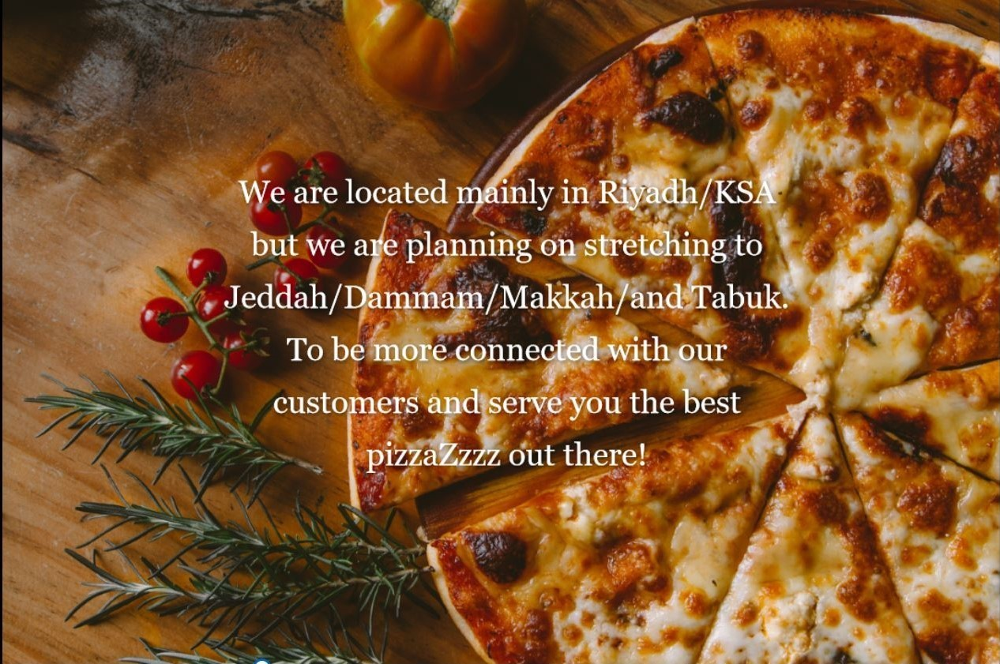

FahdzZz Oven welcomes you ToOo
All of the world's cooking skills,tastes,and spicy Sauces are to be experienced by You.
Feel free to check our menu
PizzAzz
We have varieties of Pizzaz in our menu which will have your tummy's attention ;)
Capricciosa
This type of pizza was originally made in Rome
and it known for its capricious LUST.

Vegetariana
this Italian pizza variety is created to appeal to the vegetarian palate.
Pizza vegetariana consists of a basic pizza dough that is smeared with tomato sauce
and topped with mozzarella and a combination of fresh, seasonal vegetables
Pepperoni
Pepperoni pizza is a classic favorite ,the whole wheat crust has more fiber and nutrients than a white flour crust ,and the taste it leaves is TRemendouS.

Get to know FahdzZz!
